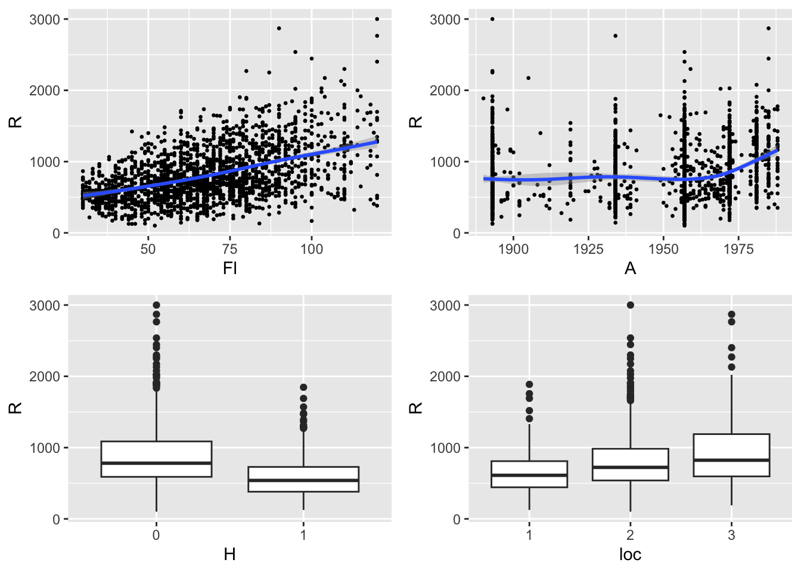
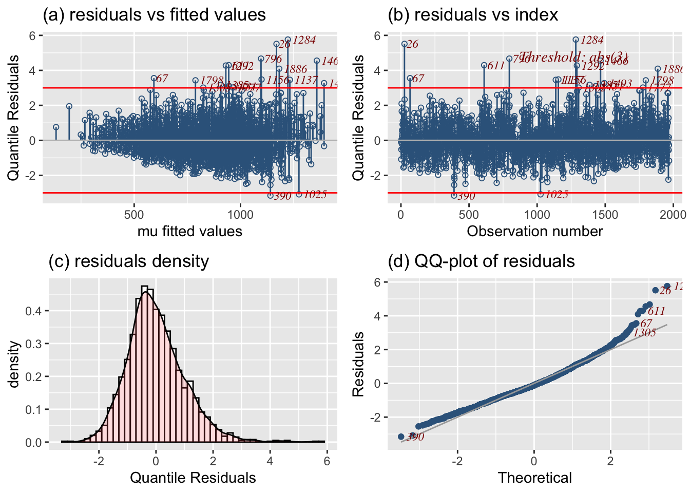
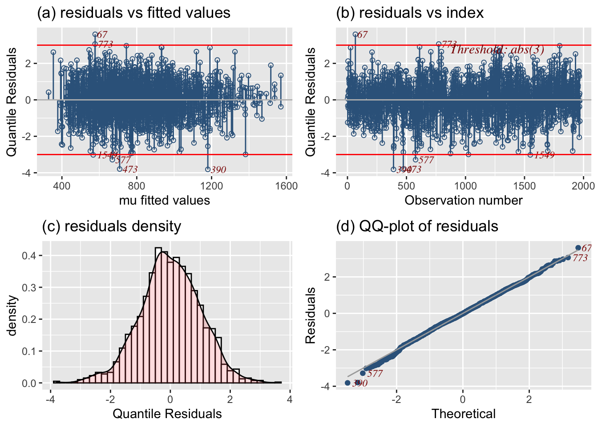
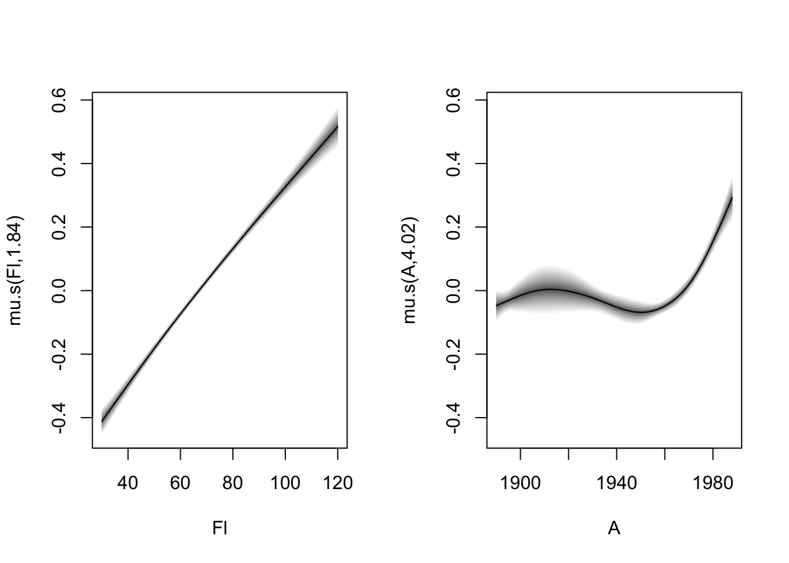
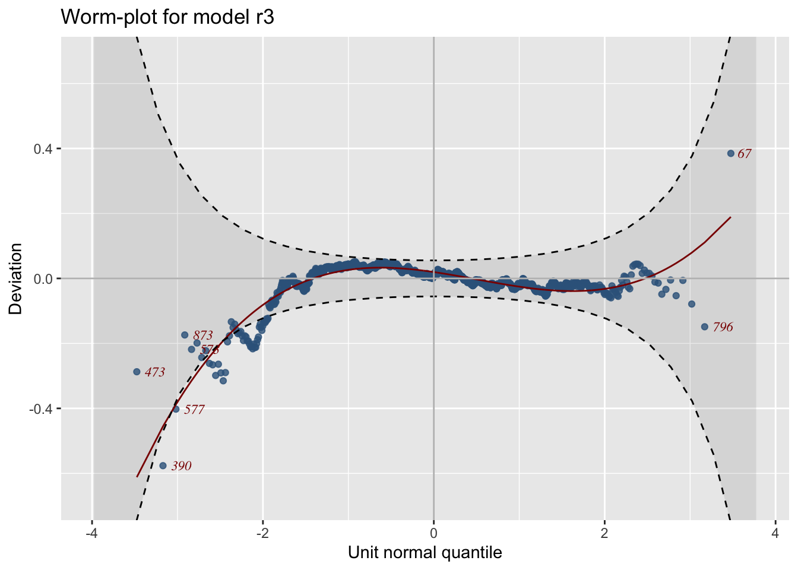
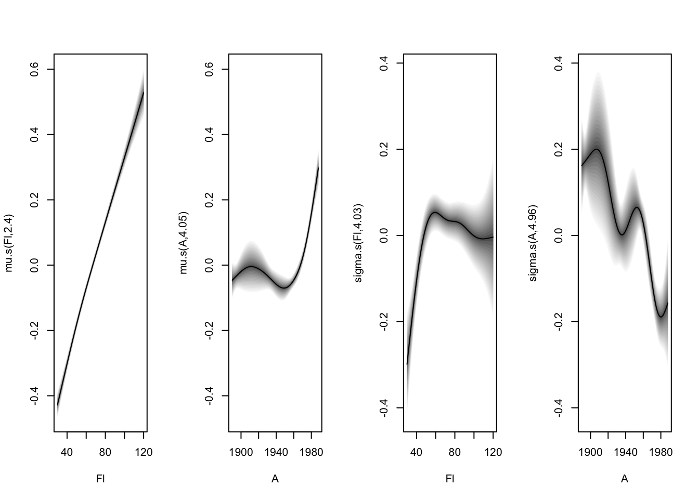
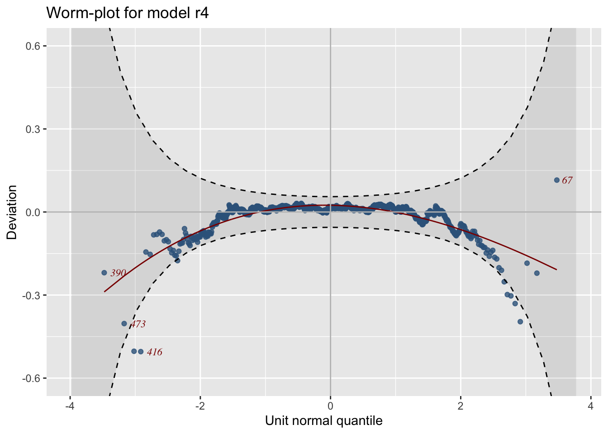
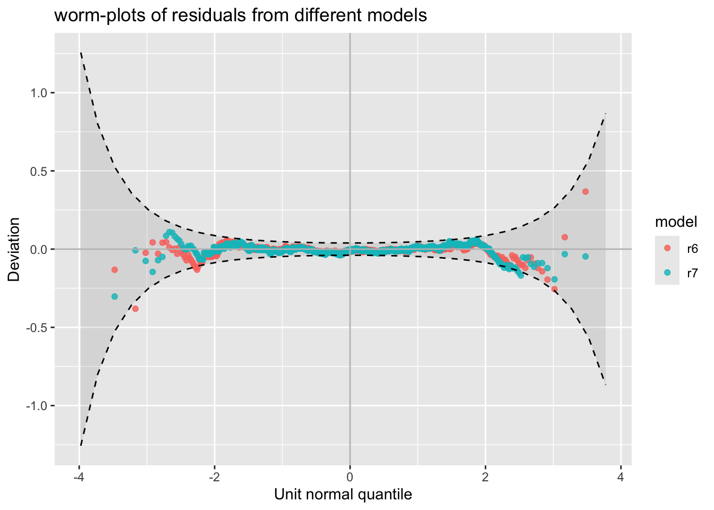

The rent data come from a survey conducted in April 1993 by Infratest Sozialforschung, where a random sample of accommodation with new tenancy agreements or increases of rents within the last four years in Munich was selected, including single rooms, small apartments, flats and two-family houses. The data were analysed by Stasinopoulos, Rigby, and Fahrmeir (2000) and they are in the package gamlss.data (which is automatically loaded when gamlss is loaded). There are 1,969 observations on nine variables in the data set but, for the purpose of demonstrating GAMLSS, we will use only the following five variables:
100 % of data are ploted,
that is, 1969 observations.
`geom_smooth()` using method = 'gam' and formula = 'y ~ s(x, bs = "cs")'
`geom_smooth()` using method = 'gam' and formula = 'y ~ s(x, bs = "cs")'

Figure 1: Plot of the rent R against explanatory variables Fl, A, H and loc.
Figure 1 shows plots of the rent, R, against each of the explanatory variables. Although these are bivariate exploratory plots and take no account of the interplay between the explanatory variables, they give an indication of the complexity of these data. The first two explanatory variables, Fl and A, are continuous. %the plots also show exploratory univariate
The plot of rent, R, against floor space, Fl, suggests a positive relationship, with increased variation for larger floor spaces, with the result that an assumption of homogeneity of variance would be violated here. There is also some indication of positive skewness in the distribution of rent, R. The peculiarity of the plot of R against year of construction, A, is due to the method of data collection. Many of the observations of A were collected on an interval scale and assigned the value of the interval midpoint, while for the rest the actual year of construction was recorded. The plot suggests that for flats up to 1960 the median rent is roughly constant but, for those constructed after that year, there is an increasing trend in the median rent. The two boxplots display how the rent varies according to the explanatory factors. The median rent increases if the flat has central heating, and increases as the location changes from below average to average and then to above average. There are no surprises in the plots here but again the problem of skewness is prominent, with asymmetrical boxes about the median and longer upper than lower whiskers.
In summary, any statistical model used for the analysis of the rent data should be able to deal with the following statistical problems:
Complexity of the relationship between rent and the explanatory variables. The dependence of the median of the response variable rent on floor space and age of construction is nonlinear, and nonparametric smoothing functions may be needed. Median rent may also depend on linear or nonlinear interactions between the explanatory variables.
Non-homogeneity of variance of rent. There is clear indication of non-homogeneity of the variance of rent. The variance of rent may depend on its mean and/or explanatory variables. A statistical model in which this dependence can be modelled explicitly, is needed.
Skewness in the distribution of rent. There is clear indication of positive skewness in the distribution of rent which may depend on explanatory variables and this has to be accounted for within the statistical model.
The linear regression model
Linear regression is a simple but effective model, which served the statistical community well for most of the last century. With response variable Y, r covariates x_1,\ldots,x_r and sample size n, it is defined as \begin{align*}
Y_i&=\beta_0+\beta_1 x_{i1}+\ldots+\beta_r x_{ir} +\epsilon_i\\
\text{where }\qquad\epsilon_i &\stackrel{\hbox{\tiny{ind}}}{\sim}\mathcal{N}(0,\sigma^2)\ ,\qquad \text{for }i=1,2,\ldots,n
\end{align*} i.e. \epsilon_i for i=1,2,\ldots,n are independently distributed each with a normal distribution with mean zero and variance \sigma^2. This specification is equivalent to
\begin{split}
Y_i & \stackrel{\hbox{\tiny{ind}}}{\sim }\mathcal{N}(\mu_i,\sigma^2)\nonumber\\
\text{where }\qquad\mu_i &=\beta_0+\beta_1 x_{i1}+\ldots+\beta_r x_{ir}\ ,\qquad \text{for }i=1,2,\ldots,n\ .
\end{split} \tag{1} We rewrite model (Equation 1) in matrix form as: \begin{split}
\textbf{Y} & \stackrel{\hbox{\tiny{ind}}}{\sim} \mathcal{N}( \boldsymbol{\mu},\sigma^2 {\textbf I}) \\
\boldsymbol{\mu} &= \textbf{X} \boldsymbol{\beta} \nonumber
\end{split} where \textbf{Y}=(Y_1,\ldots,Y_n)^\top is the response vector, \textbf{X} is the n \times p design matrix (p=r+1) containing the r covariate columns, plus a column of ones (if the constant is required), \boldsymbol{\beta}=(\beta_0,\ldots,\beta_r)^\top is the coefficient vector, and {\boldsymbol{\mu}}=(\mu_1,\ldots,\mu_n)^\top is the mean vector. Note that in order for the model to be fitted, both \boldsymbol{\beta} and \sigma^2 have to be estimated from the data. The usual practice is to estimate \boldsymbol{\beta} using the least squares estimator, obtained by minimizing the sum of squared differences between the observations y_i and the fitted means \hat\mu_i=\hat\beta_0+\hat\beta_1 x_{i1}+\ldots+\hat\beta_r x_{ir}, with respect to the \hat\beta’s . In matrix form this is written as In matrix form this is written as
\boldsymbol{\hat\beta}=\text{argmin}_{\hat\beta}\,(\textbf{y}-\textbf{X}\boldsymbol{\hat\beta})^\top(\textbf{y}-\textbf{X}\boldsymbol{\hat\beta})
which has solution
\begin{split}
\hat{\boldsymbol{\beta}} = (\textbf{X}^ \top \textbf{X})^{-1} \textbf{X}^\top \textbf{Y}\ .
\end{split} It can be shown that \hat{\boldsymbol{\beta}} is also the maximum likelihood estimator (MLE) of \boldsymbol{\beta}. Let \hat{\boldsymbol{\mu}}= \textbf{X} \hat{\boldsymbol{\beta}} be the fitted values of the model and \hat{\boldsymbol{\epsilon }}= \textbf{Y}-\hat{\boldsymbol{\mu}} the standard residuals (i.e. fitted errors). Then the MLE for \sigma^2 is \begin{split}
\hat{\sigma}^{2}=\frac{ \hat{\boldsymbol{\epsilon}}^\top \hat{\boldsymbol{\epsilon}}}{n}\ ,
\end{split} which is a biased estimator, i.e. E \left(\hat{\sigma}^2 \right) \neq \sigma^2. An unbiased estimator of \sigma^{2} is given by \begin{split}
s^{2}=\frac{\hat{\boldsymbol{\epsilon}}^\top \hat{\boldsymbol{\epsilon}}}{n-p}\ .
\end{split} Sometimes s^2 is referred as the REML (Restricted Maximum Likelihood) estimator of \sigma^2.
A linear regression model can be fitted in R using the function lm(). Here we compare the results from lm() to the ones obtained by gamlss2(). The notation
R ~ Fl+A+H+loc
refers to a formula in R for more information type ?formula.
The coefficient estimates for the \mu parameter of the two fits are identical. Note the gamlss2 produce an extra coefficient from the variance model which is a constant. Note that the two factors of the rent data, H and loc, are fitted as dummy variables as explained in more detail in later section Section.
The fitted objects r1 and l1 use the methods fitted() and resid() to obtain fitted values and residuals respectively. Note that the gamlss2 object residuals are the normalized (randomized) quantile residuals as explained in the lecture and not the usual residuals \hat{\boldsymbol{\epsilon }} that might be expected.
The MLE of \sigma can be obtained from a gamlss2 fitted object using the command fitted(r1, type="parameter", what="sigma")[1]. (Here [1] shows the first element of the fitted vector for \sigma) since it is constant for all observations. summary() will show the standard errors and t-tests of the estimated coefficients. The method used to calculate standard errors in the summary() function of a gamlss2 model are the standard methods based on the second derivative of the likelihood function.
Call:
gamlss2(formula = R ~ Fl + A + H + loc, data = rent, family = NO,
... = pairlist(trace = FALSE))
---
Family: NO
Link function: mu = identity, sigma = log
*--------
Parameter: mu
---
Coefficients:
Estimate Std. Error t value Pr(>|t|)
(Intercept) -2775.0388 526.8431 -5.267 1.54e-07 ***
Fl 8.8394 0.3386 26.108 < 2e-16 ***
A 1.4808 0.2673 5.540 3.43e-08 ***
H1 -204.7596 19.3784 -10.566 < 2e-16 ***
loc2 134.0523 25.1343 5.333 1.07e-07 ***
loc3 209.5815 27.1218 7.727 1.74e-14 ***
*--------
Parameter: sigma
---
Coefficients:
Estimate Std. Error t value Pr(>|t|)
(Intercept) 5.73165 0.01594 359.7 <2e-16 ***
---
Signif. codes: 0 '***' 0.001 '**' 0.01 '*' 0.05 '.' 0.1 ' ' 1
*--------
n = 1969 df = 7 res.df = 1962
Deviance = 28159.0039 Null Dev. Red. = 2.8%
AIC = 28173.0039 elapsed = 0.01sec
The fitted model is given by
y \sim \mathcal{N}(\hat\mu,\hat\sigma^2)
where
\begin{split}
\hat\mu &= -2775.03
+ 8.83 \, Fl
+ 1.48 \, A
-204.75 \texttt{if H=1)} + \\
& + 134.0 \texttt{if loc=2)} \quad + 209.5 \texttt{(if loc=3)}\\
\log(\hat\sigma) &= 5.73
\end{split}
Note that \sigma is fitted on the log scale (indicated by the log link function, so its fitted value is computed from its intercept as \hat{\sigma}= \exp(5.73). R^2 is obtained from the gamlss fitted object as
Rsq(r1)
[1] 0.3372029
One way of checking the adequacy of a model is to examine the residuals.
resid_plots(r1)

The important issue here is that the distributional assumption of normality is easily rejected by looking at the normal Q-Q plot (bottom right panel, Figure ). There is a systematic departure from a linear relationship between the observed (normalized quantile) residuals and their approximate expected values, indicating that the residuals are positively skewed. Note also that the plot of residuals against fitted values (top left panel, Figure ) is not randomly scattered about a horizontal line at 0, but fans out, indicating variance heterogeneity, in particular that the variance increases with the mean.
Given that the normal (or Gaussian) assumption is violated because of the positive skewness, we consider the generalized linear model next.
The generalized linear model (GLM)
The generalized linear model (GLM) was introduced by Nelder and Wedderburn (1972) and further developed in McCullagh and Nelder (1989). There are three major innovations in their approach: (i) the normal distribution for the response variable is replaced by the exponential family of distributions (denoted here as \mathcal{E}), (ii) a monotonic function g(\cdot) is used in modelling the relationship between E(Y) and the explanatory variables, and finally (iii) in order to find the MLE for the parameters \boldsymbol{\beta} it uses an iteratively reweighted least squares algorithm, which can be implemented easily in any statistical package having a good weighted least squares algorithm.
The GLM can be written as: \begin{align*}
Y_i & \stackrel{\hbox{\tiny{ind}}}{\sim }\mathcal{E}(\mu_i,\phi)\nonumber\\
\text{where }\qquad g(\mu_i) &=\beta_0+\beta_1 x_{i1}+\ldots+\beta_r x_{ir}\ ,\qquad \text{for }i=1,2,\ldots,n\ ,
\end{align*} and \phi is the parameter. This is written in matrix form as
\begin{split}
\textbf{Y} & \stackrel{\hbox{\tiny{ind}}}{\sim} \mathcal{E}( \boldsymbol{\mu},\phi) \\
{\boldsymbol \eta} &=g(\boldsymbol{\mu}) = \textbf{X} \boldsymbol{\beta}\ . \nonumber
\end{split}
where {\boldsymbol \eta} is called the linear predictor.
The exponential family distribution \mathcal{E}(\mu, \phi) is defined by the probability (density) function f(y | \mu,\phi) having the form:
where E(Y)=\mu=b'(\theta) and V(Y)=\phi\, V(\mu), where V(\mu)=b''\left[\theta(\mu)\right]. (V(\mu) is called the .) The form of () includes many important distributions including the normal, Poisson, gamma, inverse Gaussian and Tweedie distributions having variance functions V(\mu)=1,\mu, \mu^2, \mu^3 and \mu^p for p<0 or p>1, respectively, and also the binomial with variance function V(\mu)=\frac{\mu (1-\mu)}{N}, where N is the binomial denominator.
Within the GLM framework the Gaussian distribution, used in the previous section to fit the rent data, might be replaced by the gamma distribution with probability density function (pdf) given by
\begin{split}
f(y;\mu,\phi)&=\frac{y^{1/\phi-1}\exp(-\frac{y}{\phi\mu})}{(\phi\mu)^{(1/\phi)}\Gamma(1/\phi)}\ ,\qquad y>0,\; \mu>0,\; \phi>0.
\end{split}
(In package gamlss the gamma distribution is parametrized with scale parameter \sigma, where \sigma=\sqrt{\phi}.)
Link functions were introduced by Nelder and Wedderburn (1972) for GLMs, but are appropriate for all regression models since they guarantee that parameter estimates remain within the appropriate range.
For example if a parameter \theta has range 0<\theta<\infty, the logarithmic transformation \eta=\log(\theta) produces -\infty<\eta<\infty. In parameter estimation, if the logarithmic link is used, \eta is estimated and transformed back to \theta as e^\eta=\theta\ , which is guaranteed to be in the range (0,\infty). For the logarithmic link, \log(\theta) is the link function and e^\eta is the inverse link function. In general, the link function is denoted as \eta=g(\theta), and the inverse link as g^{-1}(\eta)=\theta. Generally, for a distribution, each model parameter has its own link function, appropriate to its range. For the gamma distribution we have two model parameters \mu and \sigma. GAMLSS uses the log link function as default for both parameters, since the range of both is (0, \infty). Their link functions are denoted as
\begin{split}
\eta_1=g_1(\mu)&=\log(\mu)\\
\eta_2=g_2(\sigma)&=\log(\sigma)\ .
\end{split}
(Note that a log link assumes that the relationship between the parameter and the predictor variables is multiplicative.) The glm() function has as default the canonical link function for \mu, which is different for each distribution. For the Gamma is the inverse, i.e. g(\mu)=1/\mu.
Important: The GAMLSS model as implemented in the package does not use canonical links as default for \mu as in the function, but generally uses links reflecting the range of the parameter values, i.e. identity" for $(-\infty, \infty)$,log” for (0, \infty), ``logit” for (0, 1), etc.
We fit the gamma distribution, using both the and functions. For , the gamma distribution is specified as the argument , whereas for it is specified as . We use the log link for \mu.
The fitted coefficients for \log(\mu) from the two models are essentially the same, as are the estimates of dispersion. From gamlss2 we have \hat{\sigma}=\exp\{-0.982199103\}=0.382 and hence \hat{\phi}=\hat{\sigma}^2=0.14. From we have \hat{\phi}=0.1402403. Note that for estimation of \phi, gamlss2 uses maximum likelihood estimation whereas glm uses the method of moments.
The deviances for models r2 and l2 are different because they are defined differently. The GLM deviance is defined as \text{D}_{\text{GLM}}= -2 \log\left(\frac{\hat{L}_c}{\hat{L}_s}\right) where \hat{L}_c is the fitted likelihood of the current fitted model, and \hat{L}_s that of the model (the model where in modelling \mu a parameter is fitted for each observation.) The GAMLSS deviance is defined as \text{D}_{\text{GAMLSS}}=-2 \log \hat{L}_c\ , which we refer to as the global deviance or \text{GDEV}.
To compare models one can used the generalized Akaike information criterion (GAIC) given by GAIC(\kappa)=-2 \log \hat{L}_c +\left(\kappa \times df\right), where df denotes the total effective degrees of freedom of the model and {\kappa} is the penalty for each extra degree of freedom used. Hence GAIC(\kappa=2) gives the Akaike information criterion (AIC) and GAIC(\kappa=\log(n)) gives the Schwarz Bayesian Criterion (SBC) or Bayesian Information Criterion (BIC). The model with the lowest value of GAIC(\kappa) for a chosen value of \kappa is selected as `best’.
To get the coefficients with their standard errors use: function!summary()
summary(r2)
Call:
gamlss2(formula = R ~ Fl + A + H + loc, data = rent, family = GA)
---
Family: GA
Link function: mu = log, sigma = log
*--------
Parameter: mu
---
Coefficients:
Estimate Std. Error t value Pr(>|t|)
(Intercept) 2.865e+00 3.974e-02 72.093 < 2e-16 ***
Fl 1.062e-02 4.084e-04 26.013 < 2e-16 ***
A 1.510e-03 2.961e-06 509.976 < 2e-16 ***
H1 -3.001e-01 2.137e-02 -14.041 < 2e-16 ***
loc2 1.908e-01 3.050e-02 6.255 4.87e-10 ***
loc3 2.641e-01 3.289e-02 8.029 1.68e-15 ***
*--------
Parameter: sigma
---
Coefficients:
Estimate Std. Error t value Pr(>|t|)
(Intercept) -0.982199 0.004065 -241.6 <2e-16 ***
---
Signif. codes: 0 '***' 0.001 '**' 0.01 '*' 0.05 '.' 0.1 ' ' 1
*--------
n = 1969 df = 7 res.df = 1962
Deviance = 27764.5898 Null Dev. Red. = 2.96%
AIC = 27778.5898 elapsed = 0.02sec
The fitted model os given by
\begin{split}
y & \sim GA(\hat\mu,\hat\sigma)\\
\text{where}\qquad\qquad&\\
\log(\hat\mu)&= 2.864+0.0106 \, FL+ 0.0015 \, A+
-0.3 \, \texttt{(if H=1)} \\
&+ 0.1907 \, \texttt{(if loc=2)}+ 0.264 \texttt{(if loc=3)}\\
\log(\hat\sigma)&= -.9822 .
\end{split}
To check which of the normal, gamma and inverse Gaussian distributions is best for the data, compare the three models using the GAIC. In this case, because all three models have the same number of parameters we could just compare the global deviance, i.e. GAIC(\kappa) with \kappa=0.
The conclusion is that the gamma provides the best fit. Now we check the residuals:
resid_plots(r2)

The residuals at this stage look a lot better than the residuals of the linear model in that at least some of the heterogeneity in the residuals, in the plot of residuals against fitted values, has disappeared. Also the curvature in the normal Q-Q plot has been substantially reduced.
Even though presence of heterogeneity and skewness in the residuals has been (partially) addressed, we next introduce the generalized additive model (GAM), which allows more flexible modelling of the relationship between the distribution parameter \mu and the continuous explanatory variables. This extra flexibility might be needed to improve the residuals of the GLM.
The generalized additive model (GAM)
Smoothing techniques became popular in the late 1980s. Hastie and Tibshirani (1990) introduced them within the GLM framework, coining the term generalized additive models (GAM). Wood (2006) has contributed extensively to GAM theory and popularity by allowing, in his implementation of GAM in R (package mgcv), the automatic selection of the smoothing parameters in the model. (In the original implementation of GAM in S-plus and R the smoothing parameters $ $ or equivalently the effective degrees of freedom have to be fixed.) The GAM can be written as:
\begin{split}
Y & \stackrel{\hbox{\tiny{ind}}}{\sim} \mathcal{E}( \boldsymbol{\mu},\phi) \nonumber\\
{\boldsymbol \eta}&=g\left( \boldsymbol{\mu} \right)=\textbf{X}\boldsymbol{\beta} + s_1(x_{1})+\ldots+ s_J(x_{J})
\end{split}
where the s_j are smoothing nonparametric functions applied to covariates x_j, j=1,\ldots,J. The idea is to let the data determine the relationship between the predictor1\eta=g(\mu) and the explanatory variables, rather than enforcing a linear (or polynomial) relationship. More detail about smoothers within the ‘gamlss2’ package can be found in the manual. Here we will use the smoothing function s(), which is an implementation of the thin-plate smoother in gamlss2 @ Wood (2006).
We now model the rent parameter \mu using smooth functions for Fl and A, and compare this model with the simple GLM fitted using gamlss2, (r2) in the previous section.
GAMLSS-RS iteration 1: Global Deviance = 27692.7973 eps = 0.086688
GAMLSS-RS iteration 2: Global Deviance = 27683.9424 eps = 0.000319
GAMLSS-RS iteration 3: Global Deviance = 27683.9424 eps = 0.000000
AIC(r2,r3)
AIC df
r3 27705.66 10.85749
r2 27778.59 7.00000
According to the AIC, the GAM model with smoothers is better than the simple GLM with linear terms for Fl and age A. The summary of the fit is shown below:
Single term deletions for
mu
Model:
R ~ s(Fl) + s(A) + H + loc | 1
Df AIC LRT Pr(Chi)
<none> 27706
H 1.6771 27862 160.079 < 2.2e-16 ***
loc 2.4501 27770 68.958 2.599e-15 ***
Fl 0.0000 27706 0.000
A 0.0000 27706 0.000
---
Signif. codes: 0 '***' 0.001 '**' 0.01 '*' 0.05 '.' 0.1 ' ' 1
All terms contribute significantly to modelling the predictor \log (\mu). Note that drop1() can be very slow for large data sets and for models with many smoother terms.
One of the properties of the fitted nonparametric smooth functions is that they cannot be described simply in a mathematical form. However they can be displayed. Here we plot them using the the function plot():
plot(r3)

The plot shows that the predictor \eta=\log(\mu) for the mean rises almost linearly with floor space Fl, but nonlinearly with age A, remaining stable if the flat was built before the 1960’s and rising after that. The GAMs in general allow for a flexible specification of the dependence of the parameter predictors on different explanatory terms. To check the adequacy of the fitted GAM we use a worm plotBuuren and Fredriks (2001):
resid_wp(r3)

Diagnostics explains in detail later and how to interpret a worm plot. Here it is sufficient to say that for an adequate fitted model we would expect the dots (which appear like a worm) to be close to the middle horizontal line and 95% of them to lie between the upper and lower dotted curves, which act as 95% pointwise confidence intervals, with no systematic departure. This does not appear to be the case for the fitted GAM, where the worm is well below the lower curve on the left of the figure. Multiple worm plots allow investigation of the adequacy of the model within ranges of the explanatory variables, and are often used in centile estimation.
Modelling the scale parameter
The gamma distribution has two parameters: \mu, the mean of the distribution and \sigma, a scale parameter which is related to the variance by \V(Y)=\sigma^2 \mu^2. Hence \sigma is the coefficient of variation of the gamma distribution. Up to now we have modelled only \mu as a function of explanatory variables, but there are occasions (as for the Munich rent data) in which the assumption of a constant scale parameter is not appropriate. On these occasions modelling \sigma as a function of explanatory variables could solve the problem. Modelling \sigma started in the 1970’s: Harvey (1976) and Aitkin (1987), were the first to model the variance of the normal distribution. As a solution to the problem of heteroscedasticity, Engle (1982) proposed a time series model for \sigma (volatility) for financial data. Engle’s ARCH (Autoregressive Conditional Heteroscedastic) model has created a whole industry of related models in finance. Modelling the dispersion parameter within the GLM was done by Nelder and Pregibon (1987), Smyth (1989) and Verbyla (1993). Rigby and Stasinopoulos (1996a), Rigby and Stasinopoulos (1996b) introduced smooth functions for modelling both \mu and \sigma, which they called the mean and dispersion additive model (MADAM). In the original MADAM formulation the response distribution had to be in the exponential family, but the method of fitting was Quasi-likelihood rather than full maximum likelihood, which is used in GAMLSS.
We now consider the following submodel of the GAMLSS model:
\begin{split}
Y & \stackrel{\hbox{\tiny{ind}}}{\sim} \mathcal{D}( \boldsymbol{\mu},\boldsymbol{\sigma}) \nonumber\\
{\boldsymbol \eta}_1 &= g_1\left( \boldsymbol{\mu} \right)=X_{1}\boldsymbol{\beta}_{1} + s_{11}(x_{1 1})+\ldots+ s_{1 J_1}(x_{1 J_1}) \nonumber\\
{\boldsymbol \eta}_2 &= g_2\left( \boldsymbol{\sigma} \right)=X_{2}\boldsymbol{\beta}_{2} + s_{21}(x_{2 1})+\ldots+ s_{2 J_2}(x_{2 J_2})
\end{split}
where \mathcal{D}( \boldsymbol{\mu},\boldsymbol{\sigma}) denotes any two-parameter distribution and both \mu and \sigma are linear and/or smooth functions of the explanatory variables. We model the Munich rent data using the gamma () and inverse Gaussian () distributions in model (). The following models for \mu and \sigma are specified:
\begin{split}
\log(\mu)&=\beta_{10}+s_{11}\texttt{(Fl)}+s_{12}\texttt{(A)}+\beta_{11}\texttt{(if H=1)}
+\beta_{12}\texttt{(if loc=2)}+ \\
& \; \quad \beta_{13}\texttt{(if loc=3)}\\
\log(\sigma)&=\beta_{20}+s_{21}\texttt{(Fl)}+s_{22}\texttt{(A)}+\beta_{21}\texttt{(if H=1)}
+\beta_{22}\texttt{(if loc=2)}+ \\
& \; \quad \beta_{23}\texttt{(if loc=3)}\ .
\end{split}
In the code, the model for \mu is specified after \verb|R ~|, while the model for \sigma is specified after \verb|sigma.fo=~| .
The smallest value of AIC for indicates that the gamma distribution fits better than the inverse Gaussian (model ). To plot the fitted terms for \sigma use:
plot(r4)

The significance of the terms for \sigma can be tested using the function:
drop1(r4, what="sigma")
Single term deletions for
sigma
Model:
R ~ s(Fl) + s(A) + H + loc | s(Fl) + s(A) + H + loc
Df AIC LRT Pr(Chi)
<none> 27614
H 1.8370 27615 4.4291 0.09451 .
loc 2.0072 27618 7.9831 0.01862 *
Fl 0.0000 27614 0.0000
A 0.0000 27614 0.0000
---
Signif. codes: 0 '***' 0.001 '**' 0.01 '*' 0.05 '.' 0.1 ' ' 1
Every term apart from seems to contribute significantly to explaining the behaviour of the \sigma parameter. To check the adequacy of the distribution use the worm plot:
resid_wp(r4)

There are a few points of the worm plot falling outside the 95% pointwise confidence intervals, indicating that the distribution may be inadequate. Furthermore, the inverted U-shape of the residuals indicates negative skewness in the residuals and suggests that the gamma distribution might not be flexible enough to capture the skewness in the data. Thus, we will fit a more general GAMLSS model because it allows for greater flexibility compared with the GLM and GAM models.
The generalized additive model for location, scale and shape
One of the problems of a two-parameter distribution is the fact that the skewness and kurtosis of the distribution are fixed for fixed \mu and \sigma. With a relatively large set of data we would like to have the option of a model with more flexible skewness and/or kurtosis. The MADAM Model can be extended as follows:
\begin{split}
Y & \stackrel{\hbox{\tiny{ind}}}{\sim} \mathcal{D}( \boldsymbol{\mu},\boldsymbol{\sigma}, \boldsymbol{\nu}, \boldsymbol{\tau}) \nonumber \\
{\boldsymbol \eta}_1&=g_1\left( \boldsymbol{\mu} \right)=\textbf{X}_{1}\boldsymbol{\beta}_{1} + s_{11}(\textbf{x}_{11})+\ldots+ s_{1J_1}(\textbf{X}_{1 J_1}) \nonumber\\
{\boldsymbol \eta}_2&= g_2\left( \boldsymbol{\sigma} \right)=\textbf{X}_{2}\boldsymbol{\beta}_{2} + s_{21}(\textbf{X}_{2 1})+\ldots+ s_{2J_2}(\textbf{X}_{2 J_2}) \\
{\boldsymbol \eta}_3 &=g_3\left( \boldsymbol{\nu} \right)=\textbf{X}_{3}\boldsymbol{\beta}_{3} + s_{31}(\textbf{X}_{3 1})+\ldots+ s_{3J_3}(\textbf{X}_{3 J_3}) \nonumber\\
{\boldsymbol \eta}_4 &=g_4\left( \boldsymbol{\tau} \right)=\textbf{X}_{4}\boldsymbol{\beta}_{4} + s_{41}(\textbf{X}_{4 1})+\ldots+ s_{4J_4}(\textbf{X}_{4 J_4}) \nonumber
\end{split}
where \mathcal{D}( \boldsymbol{\mu},\boldsymbol{\sigma}, \boldsymbol{\nu}, \boldsymbol{\tau}) is a four-parameter distribution and where \boldsymbol{\nu} and \boldsymbol{\tau} are shape parameters which are often related to the skewness and kurtosis aspects of the distribution. Model () defines the generalized additive model for location, scale and shape (GAMLSS) first introduced by . GAMLSS, and in particular its implementation in , is the main subject of this book. The following comments related to model () are appropriate here:
Distributions The form of the distribution \mathcal{D}( \boldsymbol{\mu},\boldsymbol{\sigma}, \boldsymbol{\nu}, \boldsymbol{\tau}) is general and only implies that the distribution should be in parametric form. In the current implementation there are around 100 , and distributions implemented in , including some highly skew and kurtotic distributions. Chapter describes the available distributions, while more detail about individual distributions can be found in . In addition:
Creating a distribution is relatively easy (Section );
Any distribution in can be left-, right- or both sides- (Section );
A version of any distribution can be created, allowing modelling of censored and interval response variables (Section );
Any distributions in can be mixed to create a new finite mixture distribution as described in Chapter ;
continuous distributions can be created for modelling discrete response variables, for example Section ;
Any continuous distribution on (-\infty, \infty) can be transformed to a distribution in (0, \infty) or (0,1) using the arguments with options or respectively of the function (Section ). \end{itemize}
Additive terms Explanatory variables can affect the parameters of the specified distribution in different ways. GAMLSS models allow linear or nonlinear parametric functions, or nonparametric smoothing functions. The package allows the following smooth additive terms: (i) P-splines (Penalized B-splines), (ii) monotone P-splines, (iii) cycle P-splines, (iv) varying coefficient P-splines, (v) cubic smoothing splines, (vi) loess curve fitting, (vii) fractional polynomials, (viii) random effects, (ix) ridge regression and (x) nonlinear parametric fits. In addition, through appropriate interfaces installed automatically with package , the software allows fitting of (i) neural networks, via package , (ii) decision trees, via , (iii) random effects, via and (iv) multidimensional smoothers, via .
Fitting methods and algorithms A parametric GAMLSS model without smoothing functions) is fitted by maximum likelihood estimation. Note that the fact that Y \stackrel{\hbox{\tiny{ind}}}{\sim} \mathcal{D}( \boldsymbol{\mu},\boldsymbol{\sigma}, \boldsymbol{\nu}, \boldsymbol{\tau}) implies that the which is defined as the likelihood of observing the sample is L\left(\boldsymbol{\mu},\boldsymbol{\sigma}, \boldsymbol{\nu}, \boldsymbol{\tau}\right)=\prod_{i=1}^n f(y_i | \mu_i, \sigma_i, \nu_i, \tau_i). Therefore the log-likelihood function is \ell = \sum_{i=1}^n \log f(y_i| \mu_i, \sigma_i, \nu_i, \tau_i). The more general model () is generally fitted by maximum penalized likelihood estimation. Chapter shows that most of the smoothers used within GAMLSS can be written as {\textbf s}(\textbf{x})={\textbf Z}{\boldsymbol \gamma}, where {\textbf Z} is a basis matrix depending on values of \textbf{x}, and {\boldsymbol \gamma} is a set of coefficients subject to the quadratic penalty {\boldsymbol \gamma}^\top{\textbf G}({\boldsymbol \lambda}) {\boldsymbol \gamma} where {\boldsymbol \lambda} is a vector or scalar of hyperparameter(s). have shown that the algorithm used for fitting the GAMLSS model for fixed values of the hyperparameters {\boldsymbol \lambda}_{kj} maximizes a penalized likelihood function \ell_{p} given by
\begin{split}
\ell_{p}=\ell-\frac{1}{2}\sum_{k=1}^{4}\sum_{j=1}^{J_k}
{\boldsymbol \gamma}_{kj}^\top{\textbf G}_{kj}\left( {\boldsymbol \lambda}_{kj} \right) {\boldsymbol \gamma}_{kj}
\end{split}
where \ell=\sum_{i=1}^{n}\log f(y_i | \mu_i,\sigma_i, \nu_i, \tau_i) is the log-likelihood function. suggested two basic algorithms for fitting GAMLSS model (). The first, the CG algorithm, is a generalization of the algorithm and uses the first derivatives and the (exact or approximate) expected values of the second and cross derivatives of the likelihood function with respect to {\boldsymbol \theta}=(\mu,\sigma,\nu,\tau). However for many probability (density) functions f(y_i | \mu_i,\sigma_i, \nu_i, \tau_i), the parameters are information orthogonal (where the expected values of the cross derivatives of the likelihood function are zero), for example location and scale models and dispersion family models. In this case the second, the RS algorithm, which is a generalization of the algorithm used by for fitting the MADAM models, is more suited as it does not use the expected values of the cross derivatives.
We now return to the Munich data to see if we can improve the model by fitting a three-parameter distribution. We use the Box-Cox Cole and Green (BCCGo) distribution, which is based on Cole and Green (1992) who were the first to fit a single smoothing term to each of the three parameters of the distribution. They called their model the ``LMS method” and it is widely used for centile estimation. The first model () fits a constant \nu while the second () fits the same model for \nu as was fitted for \mu and \sigma.
Noting the smaller AIC values, the BCCG distribution provides a superior fit compared to the gamma, and modelling the \nu parameter as a function of the explanatory variables improves the fit. To check the adequacy of the fitted distribution we use worm plots:
model_wp(r6, r7)

Both worm plots show adequate fits, so we finish our demonstration here.
We have used the Munich rent data to demonstrate how GAMLSS can be used, and we arrived at a more sophisticated model than using only GLM or GAM. In particular, modelling both \mu and \sigma of a gamma (\texttt{GA}(\mu, \sigma)) distribution in model provides a a substantially improved fit to the rent response variable as compared to the GAM model . Also a three-parameter distribution model using the \texttt{BCCGo}(\mu, \sigma, \nu) distribution marginally improves the fit. GAMLSS provides greater flexibility in regression modelling, but with this flexibility comes more responsibility for the statistician. This is not a bad thing. The philosophy of GAMLSS is to allow the practitioner to have a wide choice of regression models.
We conclude this practical with a summary of some of the basic properties of GAMLSS:
GAMLSS is a very flexible unifying framework for univariate regression models.
It allows distribution for the response variable. the parameters of the distribution can be modelled as functions of explanatory variables.
It allows a variety of (penalized) additive terms in the models for the distribution parameters.
The fitted algorithm is modular, where different components can be added easily.
It extends basic statistical models allowing flexible modelling of overdispersion, excess of zeros, skewness and kurtosis in the data.
References
Aitkin, M. 1987. “Modelling Variance Heterogeneity in Normal Regression Using GLIM.”Applied Statistics 36: 332–39.
Buuren, S. van, and M. Fredriks. 2001. “Worm Plot: A Simple Diagnostic Device for Modelling Growth Reference Curves.”Statistics in Medicine 20: 1259–77.
Cole, T. J., and P. J. Green. 1992. “Smoothing Reference Centile Curves: The LMS Method and Penalized Likelihood.”Statistics in Medicine 11: 1305–19.
Engle, R. F. 1982. “Autoregressive Conditional Heteroscedasticity with Estimates of the Variance of United Kingdom Inflation.”Econometrica: Journal of the Econometric Society, 987–1007.
Harvey, A. C. 1976. “Estimating Regression Models with Multiplicative Heteroscedasticity.”Econometrica 41: 461–65.
Hastie, T. J., and R. J. Tibshirani. 1990. Generalized Additive Models. London: Chapman & Hall.
McCullagh, P., and J. A. Nelder. 1989. Generalized Linear Models. 2nd ed. London: Chapman & Hall.
Nelder, J. A., and D. Pregibon. 1987. “An Extended Quasi-Likelihood Function.”Biometrika 74: 221–32.
Nelder, J. A., and R. W. M. Wedderburn. 1972. “Generalized Linear Models.”Journal of the Royal Statistical Society: Series A 135: 370–84.
Rigby, R. A., and D. M. Stasinopoulos. 1996a. “A Semi-Parametric Additive Model for Variance Heterogeneity.”Statististics and Computing 6 (1996a): 57–65.
———. 1996b. “Mean and Dispersion Additive Models.” In Statistical Theory and Computational Aspects of Smoothing, edited by W. Hardle and M. G. Schimek, 215–30. Heidelberg: Physica.
Smyth, G. K. 1989. “Generalized Linear Models with Varying Dispersion.”Journal of the Royal Statistical Society: Series B 51: 47–60.
Stasinopoulos, D. M., R. A. Rigby, and L. Fahrmeir. 2000. “Modelling Rental Guide Data Using Mean and Dispersion Additive Models.”Statistician 49: 479–93.
Verbyla, A. P. 1993. “Modelling Variance Heterogeneity: Residual Maximum Likelihood and Diagnostics.”Journal of the Royal Statistical Society, Series B 55: 493–508.
Wood, S. N. 2006. Generalized Additive Models. An Introduction with R. Chapman & Hall.
Footnotes
Note that we refer to {\boldsymbol \eta} as the predictor rather than the linear predictor, since the smoothing terms introduce nonlinearities in the model.↩︎